2.4 Refraction
Refraction is a property of all waves.
- When waves cross from a fast material to a slow material, they change direction, bending towards the normal.
- When waves cross from slow to fast, they bend away from the normal.
The same applies to light, which travels more slowly in materials such as glass or water.
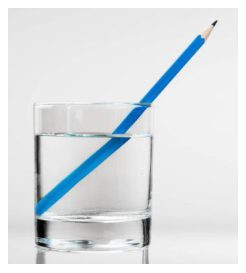
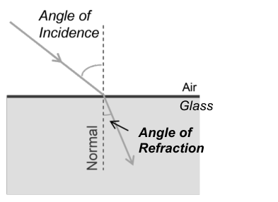
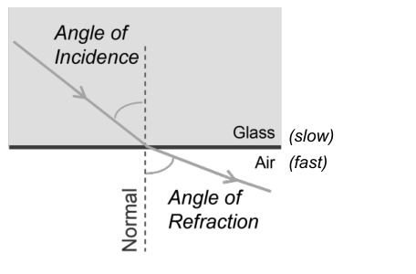
A wave travelling at 50 m/s strikes a boundary as shown. Part of the wave energy is reflected and part is refracted.
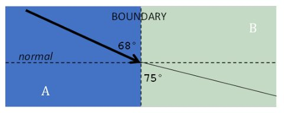
- What is the angle of reflection? °
- What is the angle of refraction? °
- Which material is more dense?
Angles are measured from the normal, so 68° to the boundary is 90 − 68 = 22° from the normal. The reflected angle is also 22°. The refracted ray is 75° from the boundary, which is 90 − 75 = 15° from the normal. The ray bends towards the normal, so it has slowed down in B: B is denser.
Critical angle and total internal reflection
Consider light travelling from a more dense medium (glass) into a less dense medium (air).
- As the angle of incidence increases, so does the angle of refraction.
- This continues until the refracted angle equals 90°. The angle of incidence at which this happens is called the critical angle.
- If the angle of incidence is increased beyond the critical angle, all the light is reflected back into the denser medium. This is called total internal reflection (TIR).
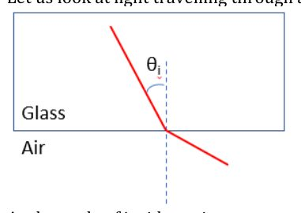
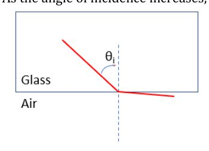
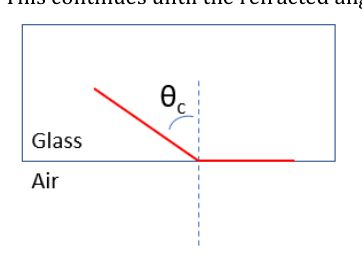
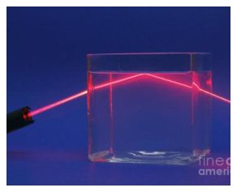
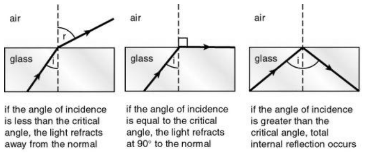
Applications of refraction: optical fibres
Total internal reflection is the principle behind optical fibres.
- An optical fibre has a slower inner core and faster cladding glass. Light hitting the boundary is reflected back into the core.
- Signals can be sent at the speed of light with very little signal loss.
- Light stays in the core even if the fibre is slightly curved.
- A vast network of undersea and overland optical fibre cables carries data around the globe as laser light.
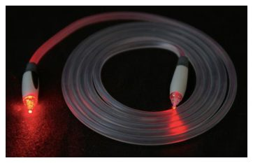
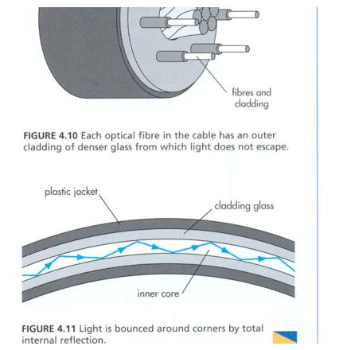
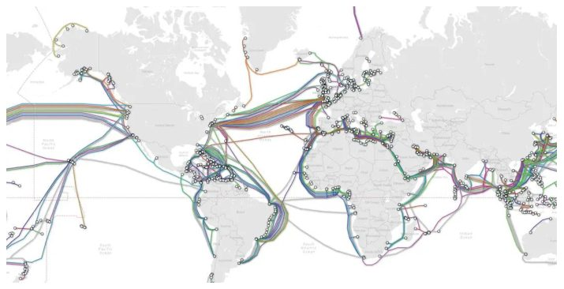
Experiment: refraction
Aims: to investigate how a light beam refracts through a rectangular Perspex block, and to demonstrate total internal reflection using a semicircular Perspex block.
Materials: rectangular and semicircular Perspex blocks, HLB, AC/DC power supply, single-slit slide, paper for ray tracing, protractor.
Rectangular block: trace the block's outline, shine a single ray into it at an angle, and mark where the ray enters and leaves. Remove the block, join the marks, draw the normals at entry and exit, and measure the angles of incidence and refraction.
Semicircular block: aim the ray at the middle of the curved edge so it travels along a radius to the centre of the flat edge. Because it enters along the normal, it doesn't refract at the curved edge. Rotate the light box in an arc so the ray still hits the centre: at the flat edge it now refracts away from the normal. Find the angle at which the refracted ray travels along the flat edge (the critical angle), then go beyond it to see total internal reflection.
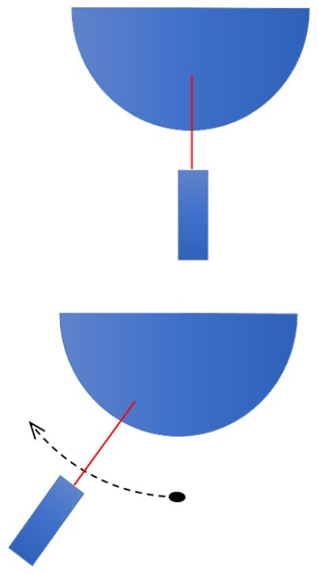
Discuss how light refracts in these blocks as it crosses from one medium to another.
When light passes from air into the Perspex (less dense to more dense; fast to slow), it slows down and bends towards the normal. When it leaves the Perspex into air (slow to fast), it speeds up and bends away from the normal. In the rectangular block, the ray leaves parallel to the way it entered, but shifted sideways. In the semicircular block, as the angle of incidence at the flat edge increases, the angle of refraction increases until it reaches 90° at the critical angle. Beyond this, the light undergoes total internal reflection.
Section 2.4: Key summary questions
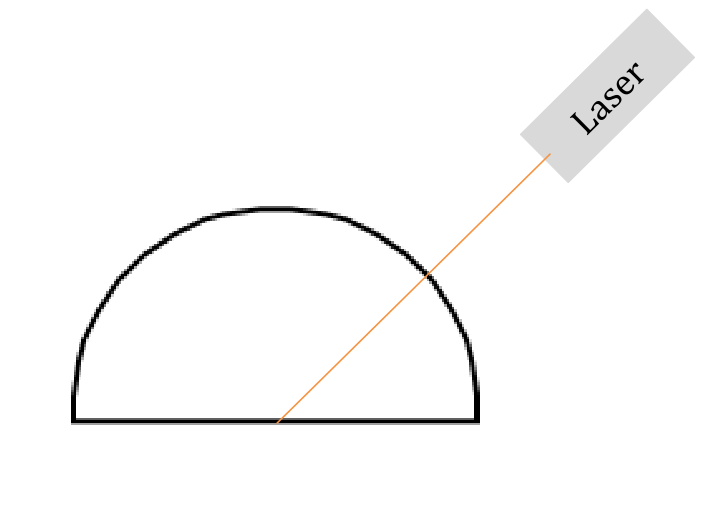
A laser is directed into a semicircular prism. Describe the path of the laser as it leaves the prism, and where the angle of incidence, angle of refraction and normal are.
The laser travels straight through the curved edge to the centre of the flat edge. Draw the normal at 90° to the flat edge at that point. The angle of incidence is between the laser ray (inside the prism) and the normal. The ray leaves into the air and refracts away from the normal, so the angle of refraction (between the exiting ray and the normal) is larger than the angle of incidence.
Explain why semicircular prisms are used to find the critical angle.
Light aimed at the centre travels along a radius, so it hits the curved edge along the normal and doesn't refract at the curved edge. Only the flat edge refracts the light, so the angle measured there is the true critical angle.
The angle of incidence is increased beyond the critical angle. Explain what happens to the path of the light ray, and name this effect.
The light no longer leaves the prism. It is reflected from the inside of the flat surface back into the prism, with the angle of incidence equal to the angle of reflection. This is total internal reflection.
Can total internal reflection occur when light travels from air into glass?
Light bends towards the normal going from air into glass, so the angle of refraction is always smaller than the angle of incidence. There is no angle of incidence that gives a 90° angle of refraction, so there is no critical angle and no total internal reflection.
2.5 Applications of refraction: lenses
Using refraction, we have developed convex and concave lenses for many purposes.
- A convex lens converges parallel rays to a focal point.
- A concave lens diverges parallel rays. Tracing the refracted rays back gives a virtual focal point.
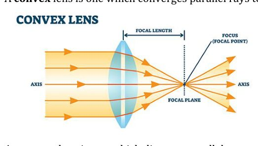
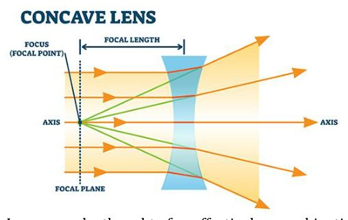
Lenses can be thought of as a combination of triangular and rectangular prisms. As with curved mirrors, the thickness/curvature of the lens determines how much the parallel rays converge or diverge.
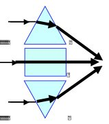
Describe each lens below.
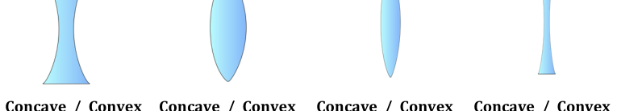
| Lens 1 | Lens 2 | Lens 3 | Lens 4 | |
|---|---|---|---|---|
| Lens type | ||||
| Focal length |
Thicker, more curved lenses bend light more, so they have shorter focal lengths.
Experiment: concave and convex lenses
Aim: to investigate the characteristics of images produced by convex and concave lenses.
Materials: HLB, AC/DC power supply, three-slit slide, thin and thick plastic convex lenses, thin plastic concave lens, convex glass lens, ray-tracing paper.
Part 1, ray tracing: shine parallel rays through the thin convex lens, the thick convex lens and the concave lens, tracing the rays, normals and angles each time.
Part 2, capturing images:
- A. Distant objects (glass convex lens): focus an image of something outside the window onto paper. Note its orientation and colour, and measure the lens-to-paper distance (the focal length).
- B. Closer objects (convex lens): focus an image of the light box globe on paper about 50 cm away. Note its orientation and size.
- C. Near objects (convex lens, virtual image): hold the lens about 1 cm above this page and look at the text.
- D. Concave lens (virtual image): look at the text and other objects through the concave lens.
A. Distant objects, convex lens: the image is and in .
C. Near objects through a convex lens (1 cm above the page): the image is and .
D. Objects through a concave lens: the image is and .
- A magnifying glass uses a lens, which forms a image.
- The type of lens that only produces smaller, upright images is .
- Convex lenses are also called lenses, as they bend parallel rays to a focal point.
- Concave lenses are also called lenses, as they bend light from a virtual focal point.
- The thicker the lens, the the focal length.
The eye
The human eye manipulates light rays so that we can see our surroundings clearly.
- Light enters the eye through a gap in the iris called the pupil.
- Light is refracted by the cornea and the lens, which changes thickness so that rays are focused on the centre of the back of the eye (the macula, on the retina).
- Light-sensitive cells called rods (light/dark) and cones (red/green/blue) are stimulated and send electrical impulses to the brain through the optic nerve.
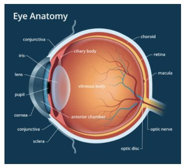
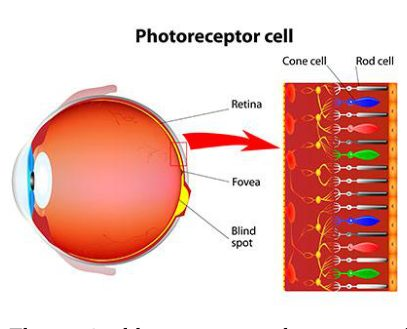
The eye accommodates near and distant objects by changing the focal length (thickness) of the lens:
- Distant objects (parallel rays with little divergence) need less refraction, so a thin lens focuses the light on the back of the eye.
- Close objects (diverging rays from a point) need more refraction, so a thick lens focuses the light.
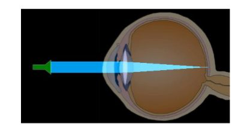
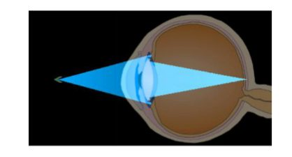
When the eye can't focus light properly, lenses can help.
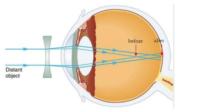
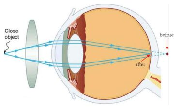
Section 2.5: Key summary questions
A person's eye is hyperopic (long-sighted): they have trouble focusing close objects onto the retina. a. Describe the path of light rays from a close object in the uncorrected eye. b. What corrective lens could be used, and what does it do to the light?
- The rays from the close object are refracted by the cornea and lens, but not enough: they would meet beyond (behind) the retina, so the image on the retina is blurry.
- A convex lens. It converges the light a little before it enters the eye, so the rays meet on the retina and the image is clear.
Which of these lenses is convex and has the shortest focal length?
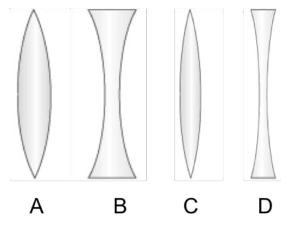
A and C are convex (thicker in the middle). A is thicker and more curved, so it has the shorter focal length.
Which part of the eye specifically allows us to sense light and dark?